Doğru seçim için bilmeniz gerekenler
Zemin ve ofis mobilyası seçerken işinize yarayacak rehberler; projelerimizden, markalarımızdan ve tasarım dünyasından haberler.

Karo halı mı, LVT mi? Ofisiniz için doğru zemini seçmek
İkisi de modüler, ikisi de hızlı uygulanır ve ikisi de Interface'in Türkiye temsilcisi olarak sunduğumuz ürünler. Fark, alanın…

Yükseltilmiş döşeme seçerken nelere bakılır?
Yükseltilmiş döşeme, kabloları, boruları ve havalandırmayı zeminin altına taşıyarak ofisin yerleşimini yıllarca esnek tutar.…

Kentin Geleceğini Birlikte Tasarlamak: AURA x İPA 2026 Yaz Akademisi
Kent, mimarlık ve malzeme kültürünü bütüncül bir yaklaşımla ele alan AURA x İPA 2026 Yaz Akademisi, “Kentin Geleceğini Birlikte…

Nöromimari ile Çalışma Alanlarını Tasarlamak
Günlük hayatın hızlı akışında çalışma alanı deneyimleri, bazen vahşi doğadaki canlıların tepkilerine benzeyebilmektedir.…
Interface’in Yeni Kauçuk Zemin Çözümü: noravant
Küresel ölçekte zemin kaplama ve sürdürülebilirlik alanında öncü şirketlerden Interface; yüksek performansı, güçlü tasarım…
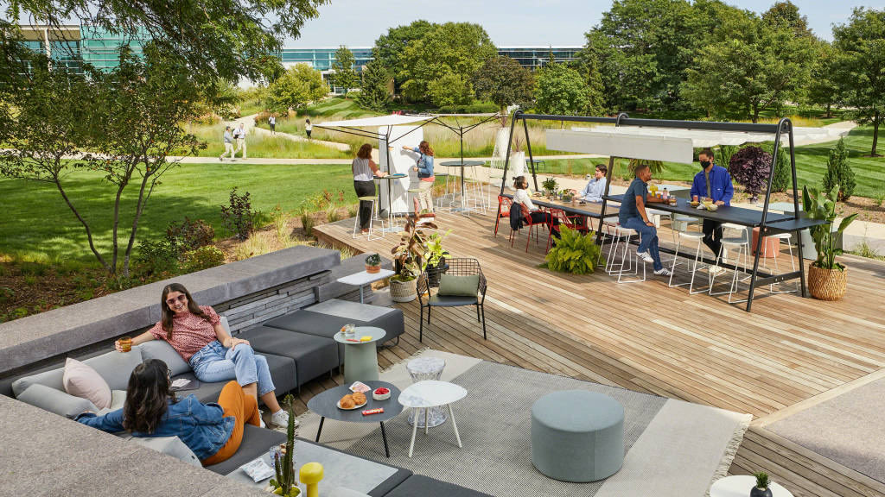
Hibrit Çalışma Kültürü Oluşturmak
Pandemi süreci boyunca insanlar alışveriş yapma biçimlerini, nerede yaşadıklarını, nasıl öğrendiklerini ve birçok kişi için nasıl…
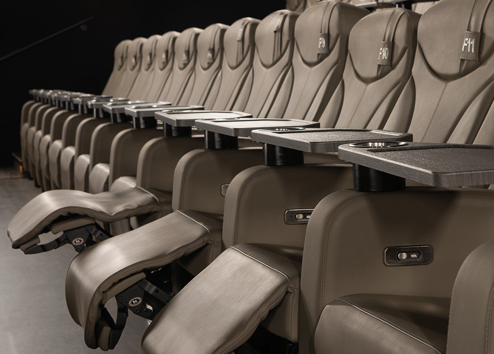
Ezcaray Seating ile Sabit Sistem Oturma Çözümleri
1955 yılında İspanya’nın La Rioja bölgesindeki Ezcaray kasabasında kurulan Ezcaray, yarım asrı aşkın süredir kamusal alanlar için…
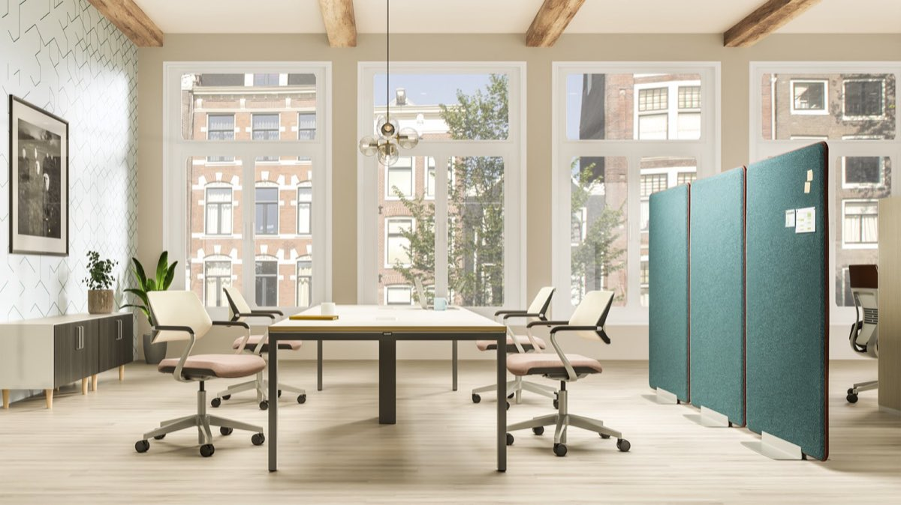
Ofislerde Akustik Konforun Çalışan Verimliliğine Etkisi
Günümüzde çalışma alanlarında akustik konfor, çalışan motivasyonu ve verimliliği doğrudan etkileyen önemli bir unsur haline…
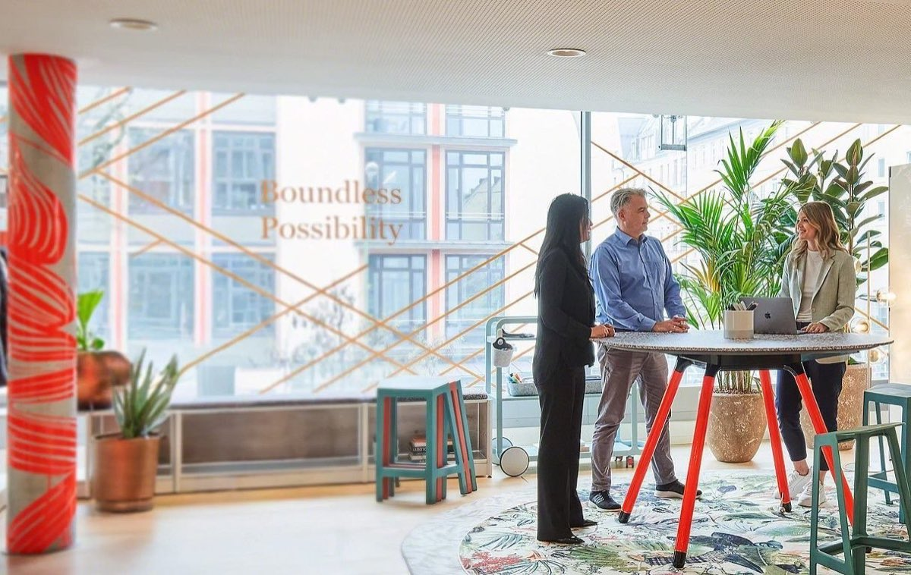
Çalışma Alanlarında Sanat
Sanat, çalışma ortamlarında sadece estetik bir unsur olmaktan öte, verimlilik, motivasyon ve genel ruh hali üzerinde önemli bir…
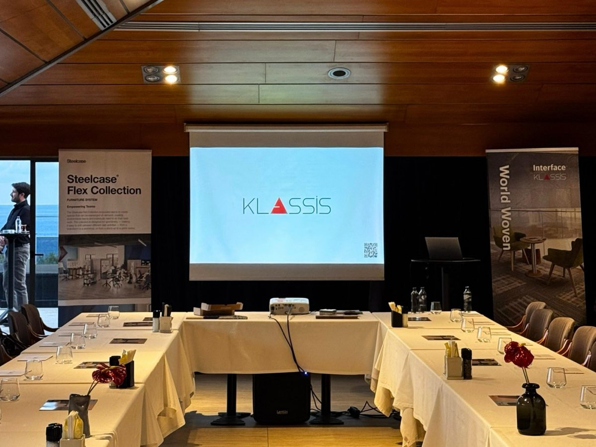
Klassis ve SMD Federasyonu’ndan Bölgesel Mimar Buluşmaları
Klassis, mimarlar ile yakın iş birlikleri kurmayı, sektör profesyonelleriyle doğrudan iletişimde olmayı ve temsil ettiği…
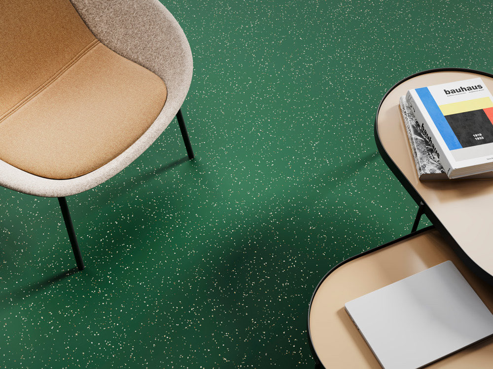
Sessiz, Dayanıklı, Doğal: nora® Kauçuk Zemin Döşemeleri
Modern mimarlıkta artık sadece nasıl göründüğümüz değil, nasıl hissettirdiğimiz ve geride ayak izimizle neler bıraktığımız da…
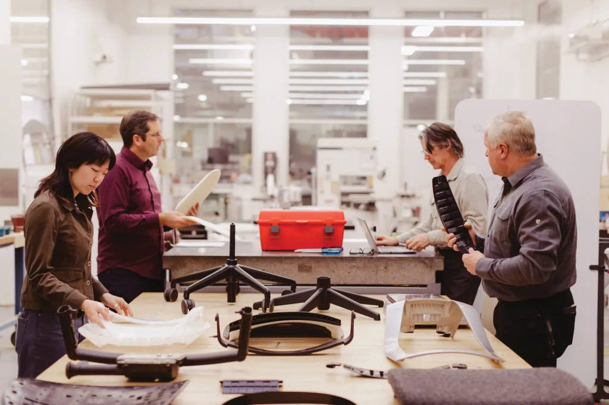
İlerlemenin Amacı: İnsan ve Gezegen için Sorumluluk
Günümüzde iş dünyasında başarı sadece finansal sonuçlarla ölçülmüyor. İnsanların refahına, toplulukların gelişimine ve gezegenin…
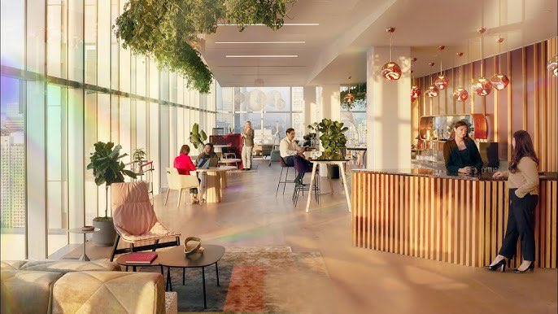
Mutluluğun Mekanı: Steelcase ile İş Yerinde Yeni Dönem
Günümüzde ofisler sadece çalışılan yerler olmaktan çıkarak; sosyalleşme, keşif ve yaratıcılığın beslendiği alanlara dönüşüyor.…
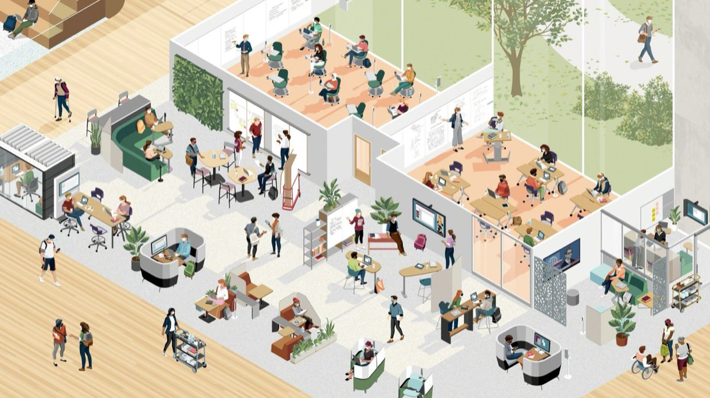
Doğa, Teknoloji ve Esneklik: Yeni Nesil Öğrenme Deneyimi
Eğitim alanları, bireylerin zihinsel ve duygusal gelişimlerini desteklerken aynı zamanda ekiplerin birlikte yaratıcı ve verimli…
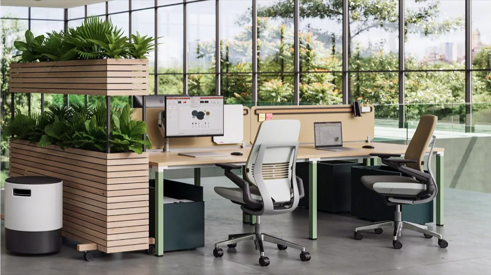
Ödüllü Tasarımı ile Steelcase Gesture
Çalışma alanlarında konfor, sağlık ve verimlilik günümüzde her zamankinden daha önemli bir noktaya geldi. Uzun saatler boyunca…
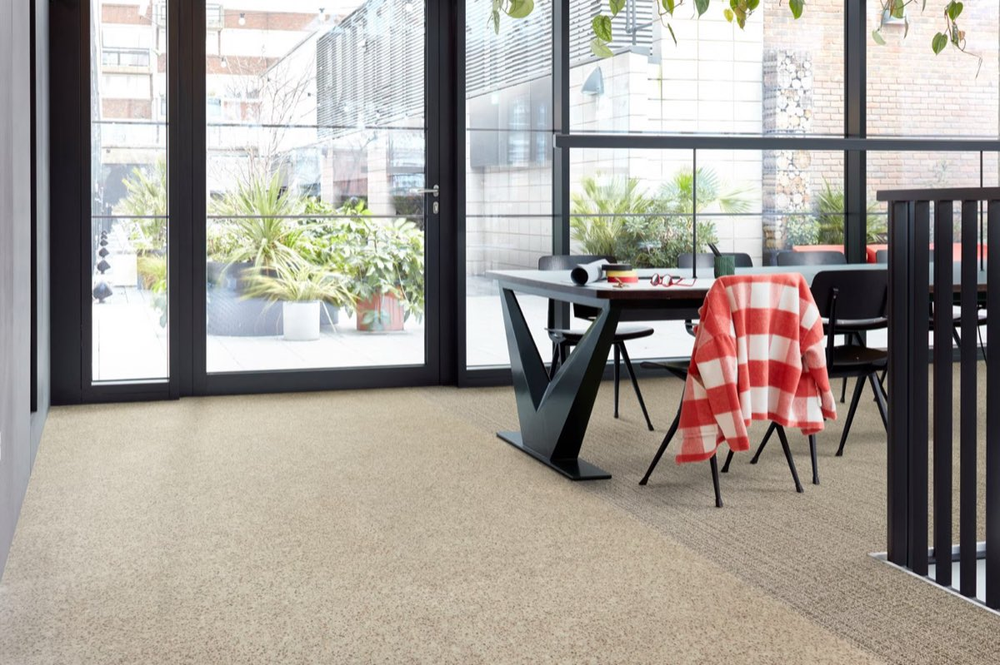
Sessizliğin Yeni Standardı: Interface LVT’de 19 dB Akustik Konfor
Gürültü, otellerden ofislere, eğitim kurumlarından konferans alanlarına kadar ticari mekanlarda kullanıcı deneyimini doğrudan…
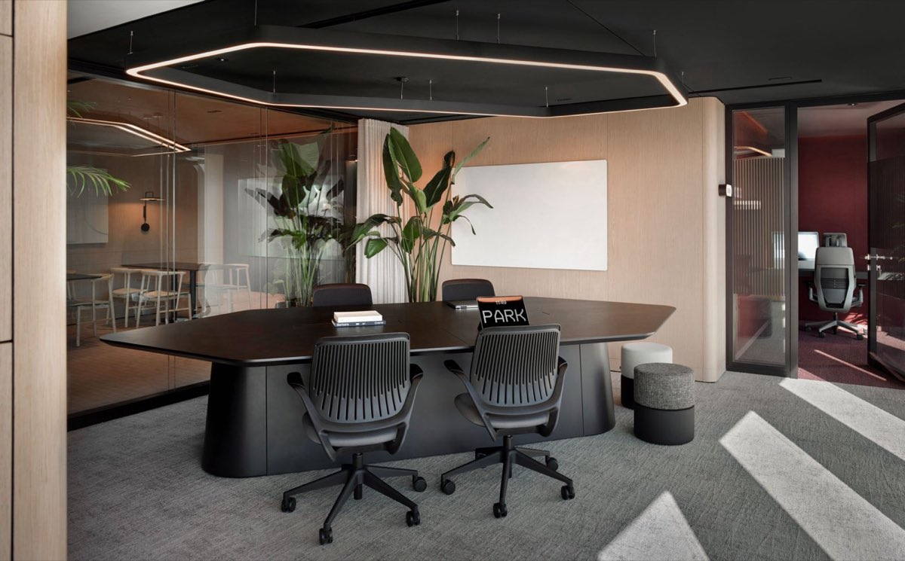
Hibrit Çalışma Modelinde Yön Değişiyor: Şirketler Ofise Dönüşü Teşvik Ediyor
Pandemiyle birlikte birçok büyük şirket, çalışma modellerinde köklü değişiklikler yaparak hibrit çalışma sistemine geçti.…
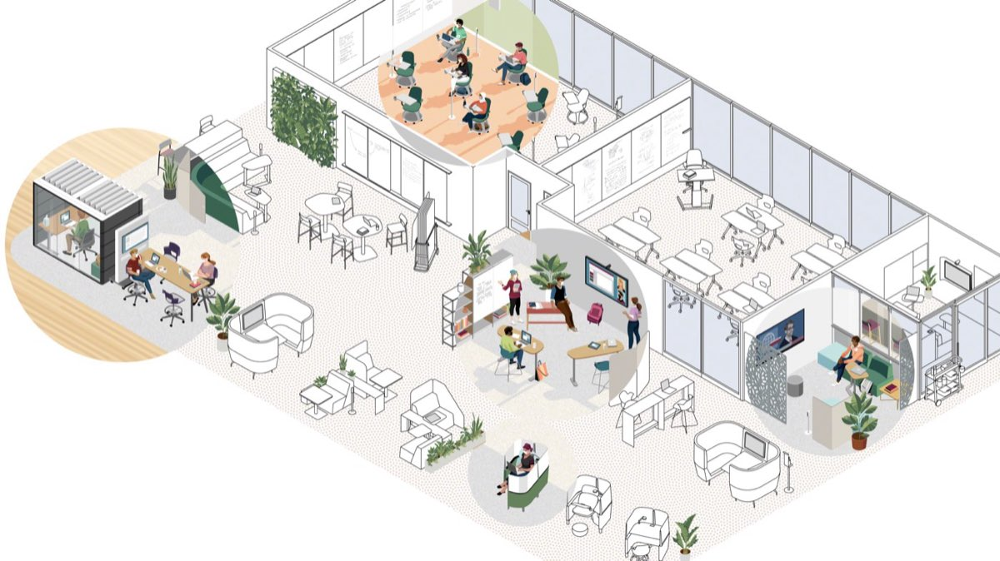
Eğitim Yapılarında Kullanıcı Odaklı Tasarım
Eğitim yapıları derslerin işlendiği alanların yanı sıra, öğrencilerin motivasyonunu, sosyal ilişkilerini ve öğrenme biçimlerini…
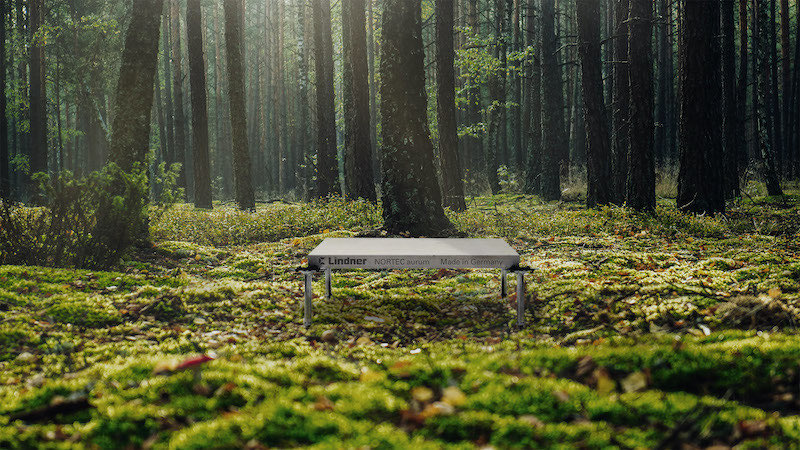
Yükseltilmiş Döşeme Sistemlerinde Yeni Dönem: Lindner NORTEC aurum ile Sürdürülebilirlik ve Performans Bir Arada
Yapı sektöründe sürdürülebilirlik kavramı artık sadece bir çevre hassasiyeti değil, aynı zamanda yüksek performans beklentisinin…
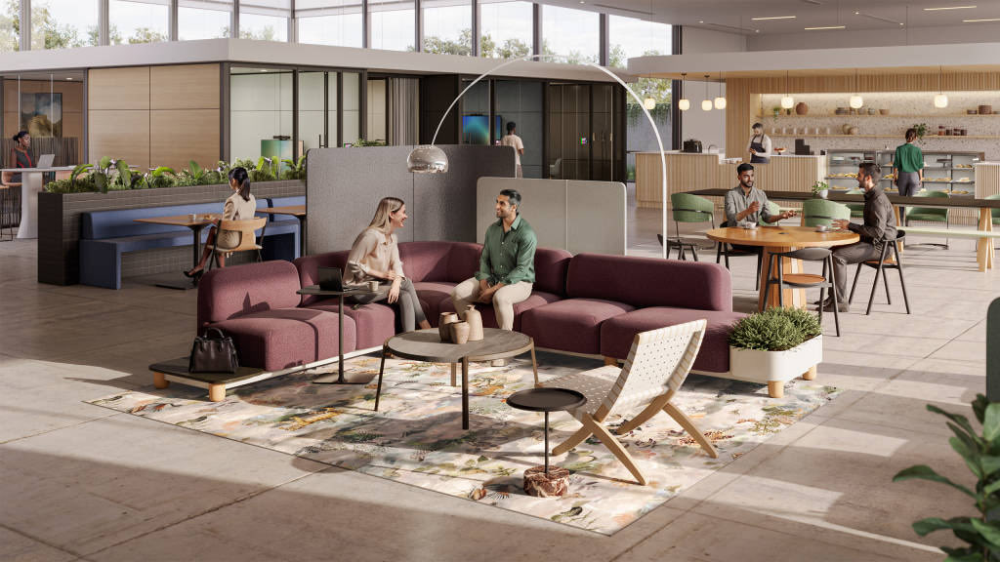
Toplum Odaklı Tasarım
Pandemi sonrasında iş hayatı geri döndü ama eskisi gibi değil. Artık fiziksel ofisler, yalnızca çalışmak için kullanılan alanlar…
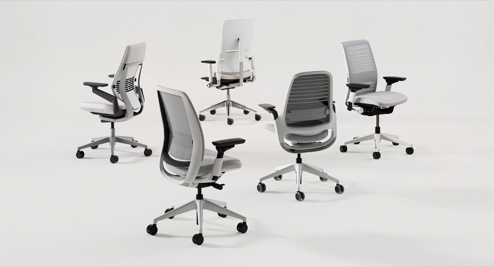
Karbon Nötr Bir Oturma Deneyimi: Steelcase Çalışma Sandalyeleri
Çalışma dünyası dönüşüyor; sadece çalışma biçimlerimiz değil, çalışma alanlarımız da artık daha sorumlu, daha sürdürülebilir…
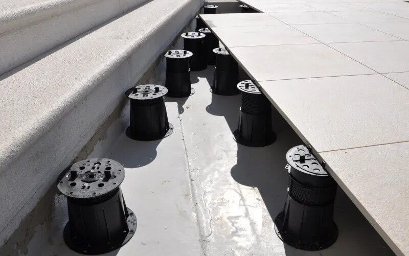
Teraslarınız için Akıllı ve Dayanıklı Çözümler: Buzon PB Serisi Dış Mekan Ayarlanabilir Ayak Sistemleri
Dış mekan projelerinde, özellikle de teras uygulamalarında karşılaşılan en büyük zorluklardan biri eğimli zeminlerle, su…
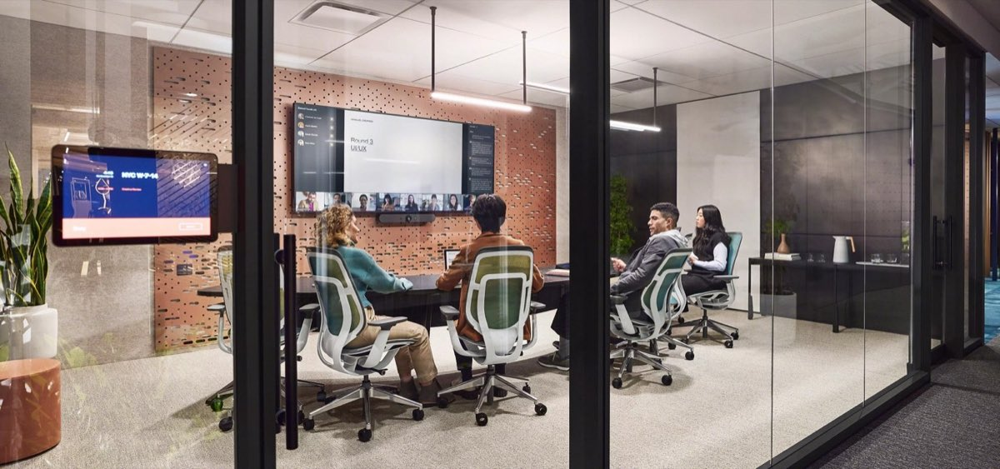
Çalışma Alanlarında Renklerin Psikolojik Etkileri: Verimliliği Artıran Tasarımlar
Renkler, günlük hayatımızın güçlü birer iletişim aracıdır. Bulunduğumuz ortamın renkleri; ruh halimizden motivasyonumuza, hatta…
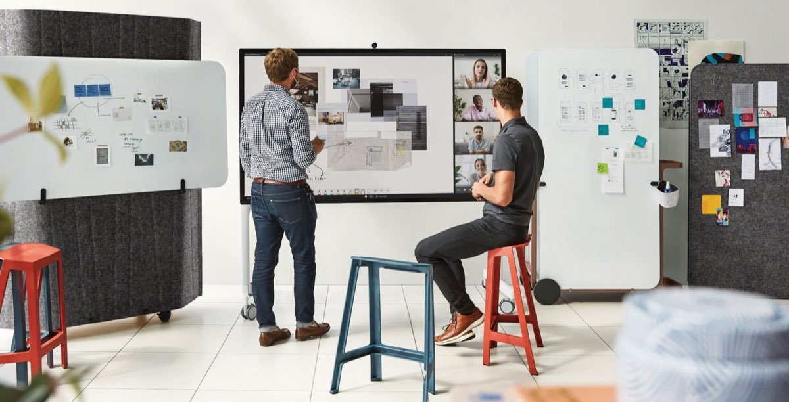
Çalışma Alanlarında Değişim ve Dönüşüm
Günümüzde çalışma kültürü, mekanın anlamını ve organizasyonel yapıyla kurduğu ilişkiyi dönüştüren kapsamlı bir evrim süreci…
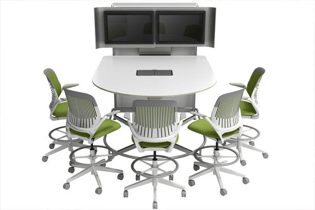
Dünya Lideri Steelcase media:scape’i tanıttı.
Dünya ofis mobilyası lideri Steelcase, ekip çalışmasına yönelik tasarladığı, medya çözümleri sunan yeni ofis ürünü media:scape’i…
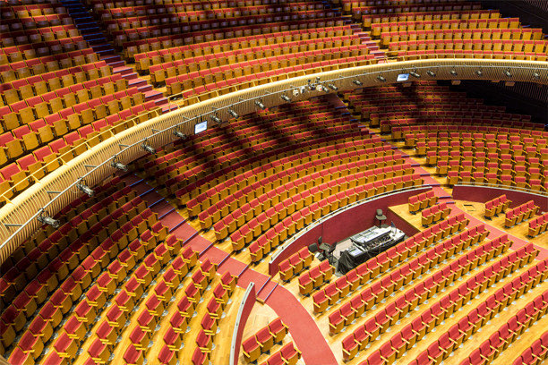
Figueras / Zorlu Center
Sanatın çeşitli dallarına ev sahipliği yapmak üzere çok amaçlı sanat merkezi olarak tasarlanan Zorlu Center’ın müzikal ve drama…
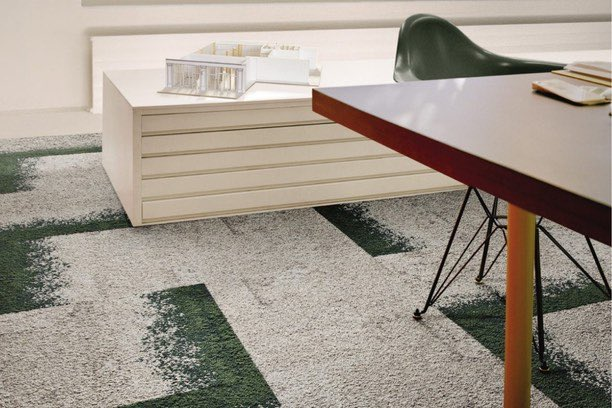
Interface Urban Retreat ile ‘Doğadan Esintiler’
Biyofili, insanoğlunun doğaya ve yaşama karşı duyduğu içgüdüsel aşkın bilimsel adı.Aynı zamanda, Interface’in dünya çapında…
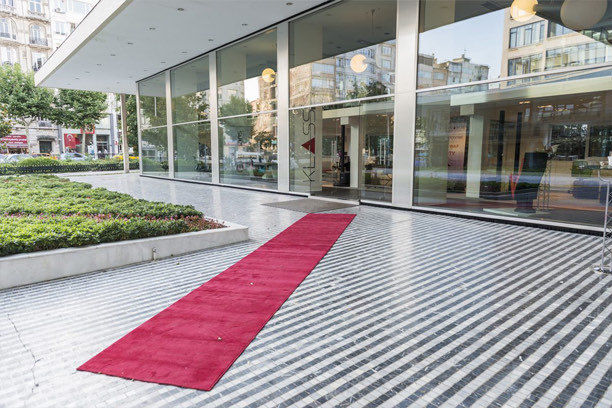
Klassis WAF Party
Figueras iş birliği ile Klassis Showroom’da gerçekleşen Dünya Mimarlık Festivali (WAF) organizasyonuna mimarlık dünyasının önde…
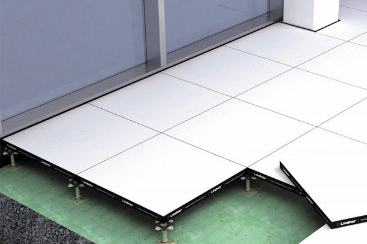
Lindner
45 yılı aşkın tecrübesi ile Alman Lindner firması Kalsiyum Sülfat özlü Nortec ürününü üretirken çevre dostu olmaya özen gösteren…
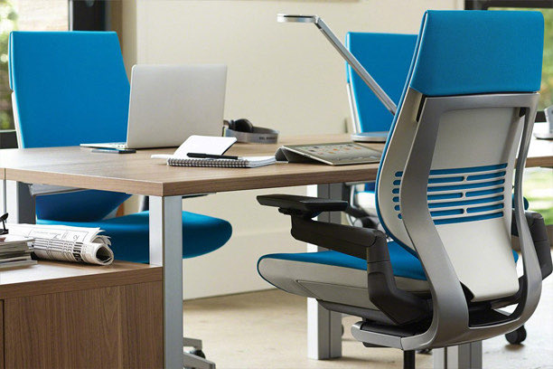
Teknolojinin Rahat Kullanımına Cevap Veren İlk Koltuk: Steelcase Gesture
Ofis mobilya ve sistemlerinde dünya lideri Steelcase insan vücudunun gündelik hareketlerinden esinlenerek tasarladığı ilk ofis…
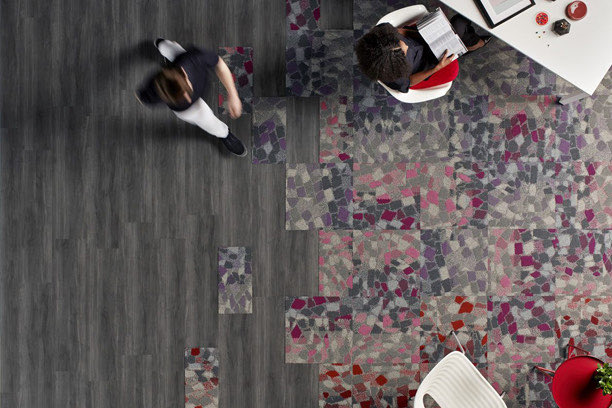
Esnek Tasarım İçin İpuçları
Pandemi, yapılı çevreye yeni talepler ve ihtiyaçlar getirmeye devam ederken, tasarımcılar, fiziksel, zihinsel ve duygusal sağlık…
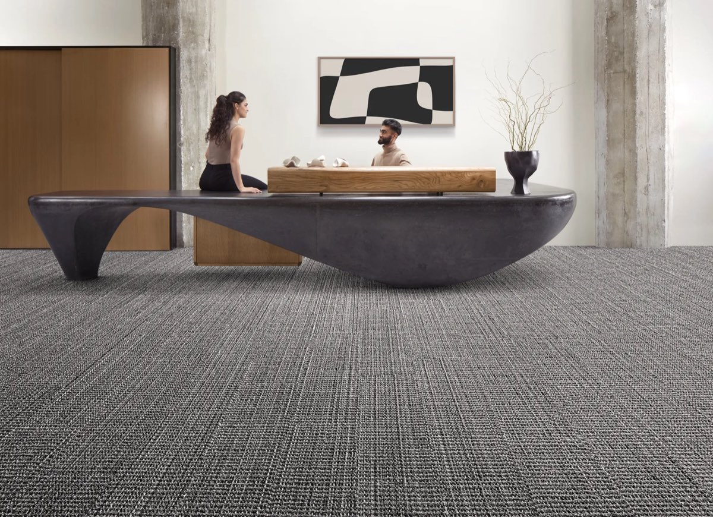
Interface Yoluna Klassis ile Devam Ediyor
Interface Halı, markanın Türkiye pazarında büyüme hedeflerini gerçekleştirmek adına yeni distribütör olarak Klassis firması ile…
Eşleşen yazı bulunamadı.
Projeniz için teklif alın
Ürün grubunu, miktarı ve konumu paylaşın; ilgili ekibimiz size dönüş yapsın.